OUR RATING
88%
High Potential88%
PRODUCT DISCOVERY FOR THE CURIOUS
Research-driven analysis of products generating real buyer interest before they become mainstream.


We scan emerging products with unusual value signals and limited trustworthy coverage.
Specifications, positioning, public buyer feedback, and comparison context.
A simple opportunity framework for demand, review gaps, differentiation, and market timing.
FEATURED ANALYSIS
QuietTrends researches emerging products, buyer concerns, review gaps, and real-world tradeoffs. These featured articles represent the type of analysis we publish when a product generates curiosity but trustworthy coverage is still limited.
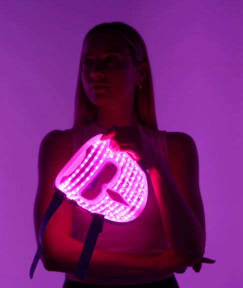
Compare-first product review of iRestore's premium LED skincare mask, including red/infrared/blue light modes, routine fit, melasma caution, comfort, and Shark/Omnilux/Wavytalk alternatives.
Read review →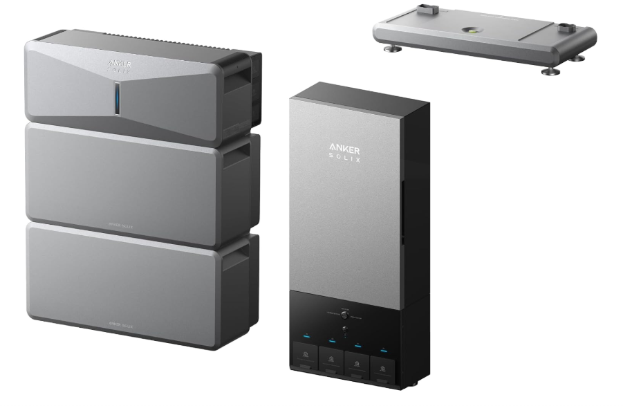
Plan-first product review of Anker's modular home battery system, including circuit planning, Power Dock choices, generator pairing, solar expansion, and EcoFlow/Tesla alternatives.
Read review →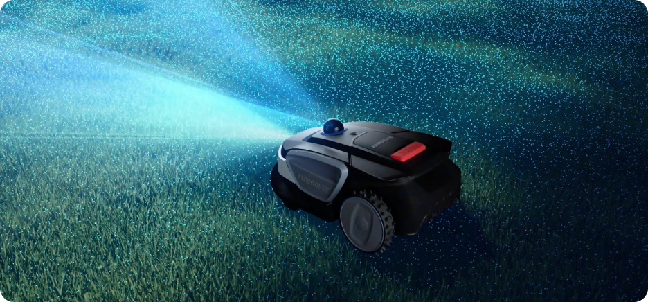
Compare-first product review of Sunseeker's wire-free yard robot, including setup, mapping, edge cleanup, weather risk, yard fit, and key alternatives.
Read review →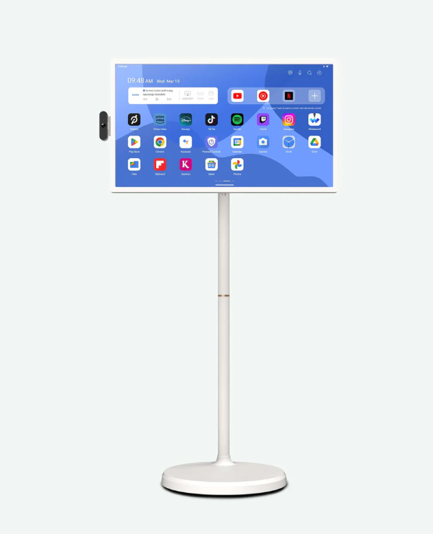
Compare-first product review of Apolosign's rolling 4K Android touchscreen, including battery life, assembly, display limits, room-to-room use, and TV/projector/tablet alternatives.
Read review →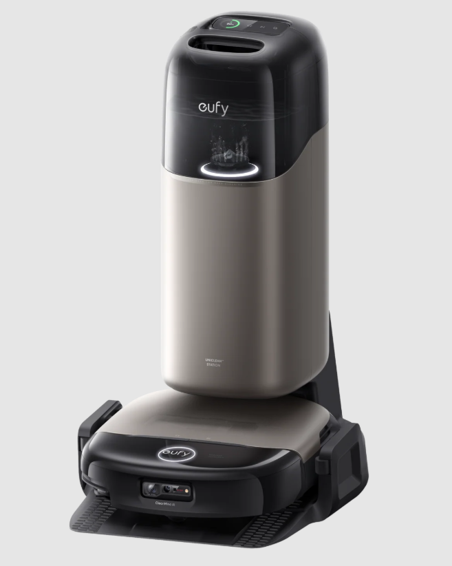
Compare-first product review of Eufy's flagship robot vacuum and mop, including suction, roller mopping, dock maintenance, fragrance, pet-home fit, and Roborock/Dyson alternatives.
Read review →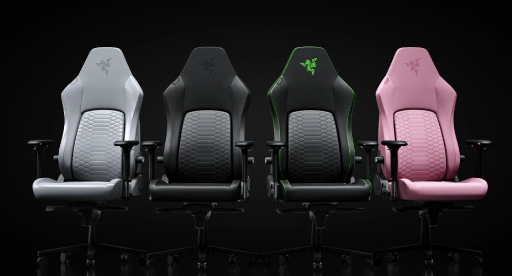
Compare-first product review of Razer's premium gaming chair refresh, including lumbar fit, cooling-material claims, seat-depth risk, and Secretlab/Corsair alternatives.
Read review →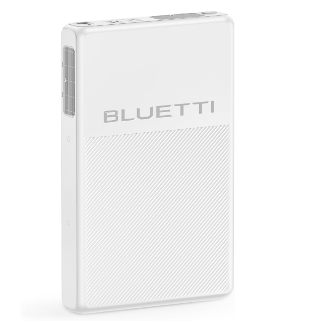
Compare-first product review of BLUETTI's fridge-focused backup battery, including UPS switchover, kitchen placement, expansion batteries, and portable power station alternatives.
Read review →
Compare-first analysis of Ninja's premium automatic espresso system, including convenience, milk-drink strengths, cold-brew doubts, and early review gaps.
Read analysis →
Coverage-gap analysis of a high-ticket outdoor kitchen kit, including custom-build comparisons, assembly risk, grill performance, and long-term backyard value.
Read analysis →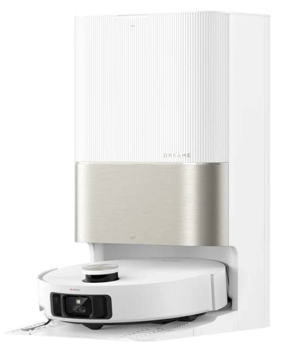
Comparison-first analysis of Dreame's premium robot vacuum, including threshold-climbing legs, mopping automation, dock maintenance, and Roborock buyer confusion.
Read analysis →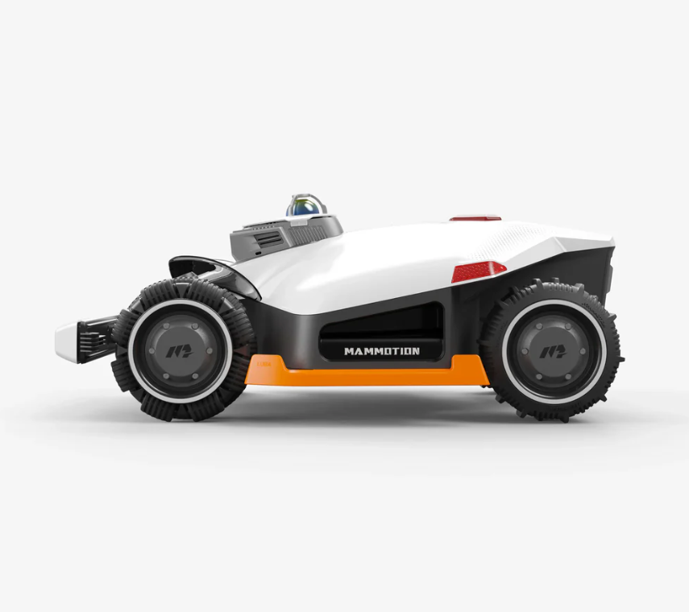
Compare-first analysis of Mammotion's premium wire-free mower, including LiDAR, AI vision, AWD terrain handling, setup risk, and Segway/Husqvarna buyer confusion.
Read analysis →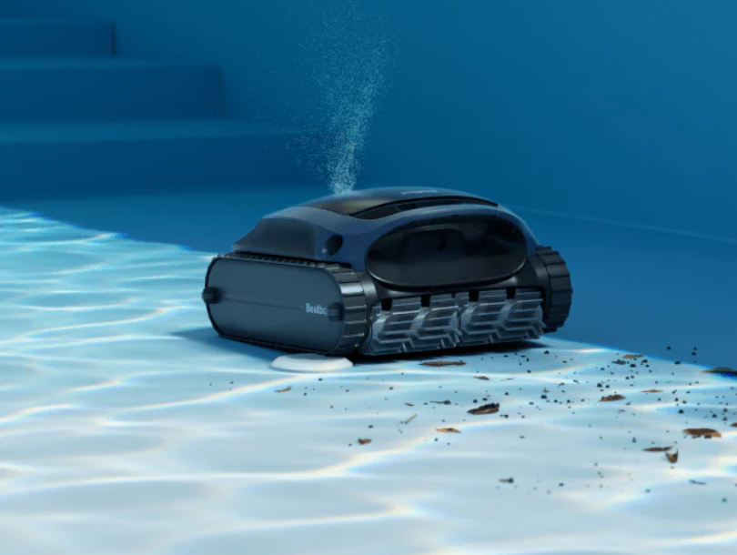
Compare-first analysis of Beatbot's premium pool-care robot, including self-maintenance, pool-service math, and Dolphin/Aiper buyer confusion.
Read analysis →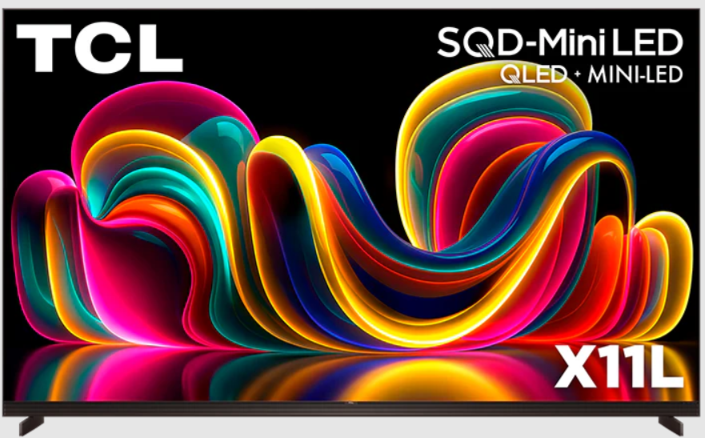
Compare-first analysis of TCL's luxury Mini LED flagship, including OLED comparison, RGB MiniLED confusion, extreme brightness claims, and premium-TV price timing.
Read analysis →